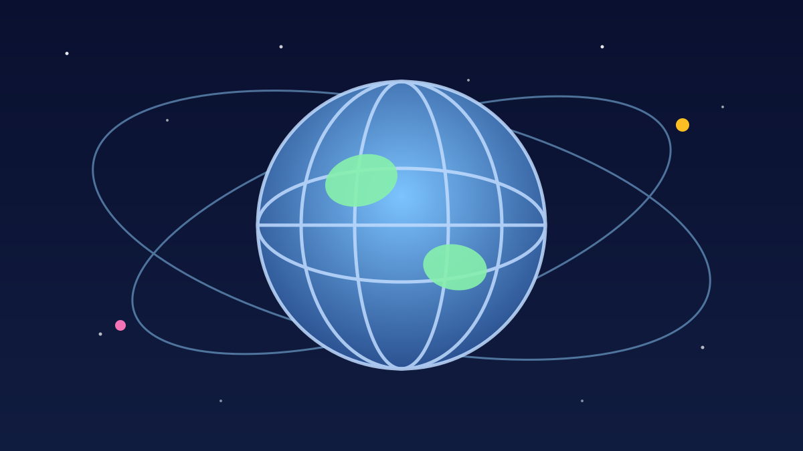

1 / 7

🌍 DUNIA
La Pulga Main Terakhir Buat Argentina: Menang 3-0!
Setelah 21 tahun, Lionel Messi akhirnya gantung sepatu dari timnas. Laga pamitnya di Stadion Monumental berakhir manis. Geser buat full story-nya →
2 / 7
🏟️
Argentina 3-0 Benin, laga perpisahan sang kapten
Di Stadion Monumental, Buenos Aires, Argentina menang 3-0 atas Benin pada laga FIFA matchday yang jadi penampilan terakhir Messi untuk La Albiceleste.
Lebih dari 85.000 penonton memadati stadion — semuanya datang buat kasih salam perpisahan ke nomor punggung 10 itu.
3 / 7
⚽
1 gol + 2 assist, ditutup penalti menit 71
Nicolas Otamendi buka skor menit 48 lewat sundulan dari sepak pojok Messi. Nico Paz gandakan jadi 2-0 menit 61, juga dari umpan Messi.
Menit 71, Messi maju sebagai eksekutor penalti — gol! Itulah gol terakhirnya untuk Argentina. Gol ke-126 dalam 208 penampilan. Masterclass pamit.
4 / 7
🥹
Malam yang banjir air mata
Messi menangis saat lagu kebangsaan dikumandangkan. Di menit ke-10, pertandingan sengaja dihentikan agar seluruh stadion memberi standing ovation.
Usai laga dia bilang, bangga banget bisa pakai seragam Argentina lebih dari 20 tahun — dan rasanya menyakitkan harus pergi. Otamendi, bek senior 38 tahun, juga ikut pamit malam itu.
5 / 7
🎁
Benin kasih kado tak biasa
Tim Benin menyerahkan miniatur Monumen Amazon — replika patung perunggu 30 meter di Cotonou yang mengenang pasukan perempuan Agojie — kepada istri Messi, Antonela Roccuzzo.
Simbolnya: sosok pelindung keluarga, sesuai tradisi budaya Benin. Classy banget, bahkan tim lawan ikut menghormati malam spesialnya.
6 / 7
📊
Warisan 20+ tahun dalam angka
208 caps, 126 gol, dan belasan trofi termasuk Piala Dunia 2022 — Messi pensiun sebagai pemain tersubur sekaligus paling banyak tampil dalam sejarah Argentina.
Di laga pamitnya sendiri dia masih sempat bikin rating 8,9: gol penalti + 2 assist + penguasaan bola 65%. Pergi di puncak, bukan di titik lelah.
7 / 7
🤔
Efeknya ke lo apa?
Mungkin lo nggak pernah nonton Messi live di era awalnya — tapi ceritanya pelajaran universal: konsistensi 20 tahun itu bukan bakat doang, itu soal bertahan dan tetap lapar.
Dan momen ini ngingetin: generasi kita barusan menyaksikan akhir sebuah era. Nanti lo bisa cerita, "dulu gue hidup di zaman Messi masih main." History in the making. 🐐